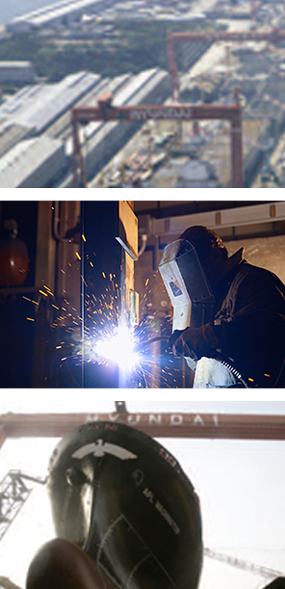

造船海洋产业
- Home
- 主要产业
- 造船海洋产业
造船海洋产业
2017年，蔚山造船海洋工业拿下了0.6亿美元的订单，占韩国船舶产量的33%，由此登上了世界第一的造船 海洋城市。
蔚山有世界最大造船海洋企业，即现代重工业和世界第五的现代尾浦造船。
现代重工业是一占地604万㎡、拥有年产可达9,200千GT生产设施的世界最大造船海洋企业。
现代尾浦造船拥有年产1,933千GT的设施，在产量方面创下了世界第五。
今后还将通过培育FPSO、 LNG、 Shale Gas船等，进一步发展成为世界级造船海洋强国。

蔚山造船海洋工业现状(2016年)
생산액(28.5%) - 울산(192,974억원), 전국(674,494억원)
부가가치(26.0%) - 울산(52,554억원), 전국(201,848억원)
사업체수(22.0%) - 울산(349억원), 전국(1,589억원)
종사자수(28.0%) - 울산(45,900억원), 전국(163,831억원)

蔚山造船海洋企业现状(2017年)
| 分类 | 现代重工业 | 现代尾浦造船 |
|---|---|---|
| 成立日期 | 1973. 12. 28 | 1975. 4. 28 |
| 职工(人) | 16,504 | 3,212 |
| 销售额(亿韩元) | 154,688 | 24,534 |
| 订单量(DWT) | 96艘 / 11,817 | 109艘 / 4,260 |
| 造船量(DWT) | 53艘 / 7,809 | 53艘 / 2,162 |
※[摘自] 2013事业报告(金融监督院公告资料)
订单·造船量摘自2013造船资料集!韩国造船协会)
订单·造船量摘自2013造船资料集!韩国造船协会)
